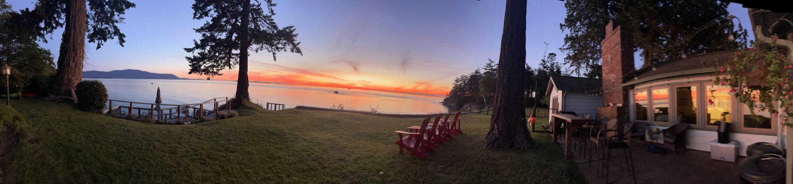

~ ~ ~
A gathering place for family and friends on Lummi Island, Washington.
See who's coming and when.
Moments at Searenity, shared by all of us.
Directions, WiFi and TV, lights and heat, garbage, and closing up.
The work that keeps the place going, starting with the new septic system.